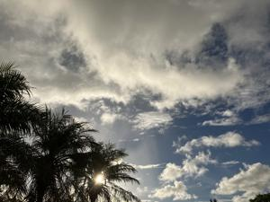
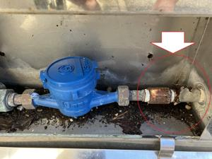

うるがいの話 ある日
最新: 水道の配管を修理【うるがいの話 ある日】とは 一日だけのプログです
『うるがいの話』の最新一日だけのプログで、通信料が少なく経済的だ。カニの画像をクリックすると全ての日付が載る『うるがいの話』サイトを表示します
|
|
【うるがいの話】 うるがい(ｳﾙｶﾞｲ urugai)とは、『もずくがに』の名前でとても大きくなります。 |
|---|---|
|
|
【カミマヤーの話】 猫のことを方言でマヤーといいます。カミマヤー（kamimayaa）とは、神の猫のことです。 |
|
【たながぁの音楽】 たながぁ（ﾀﾅｶﾞｰ tanagaa）とは手長えびのことで、何種類かあり大きいのは車 エビぐらいになります。 |

|
【ぶながぁの話】 ぶながぁ(ﾌﾞﾅｶﾞｰ bunagaa)とは、赤い髪の毛、赤い身体、そして身長は１ｍ２０ｃｍ ぐらい、川の蟹を食べているの目撃された。場所は沖縄県国頭郡大宜味村のと ある村僕の隣近所に住んでいる爺さんから、聞いた話です。 |
|
|
【ギーマの話】 ギーマ(giima)とは、山原の里山に咲くスズランに似た、 花を付けます。実は食べられます、 気が付くと口の周りが紫になっています。 |
2023年09月14日 (木）水道の配管を修理
16:16
 
『このままでは、破裂しますね』。３０年近く利用している水道管のメーター
とのつなぎの配管が、正しく破裂しそうになっていた。水道メーターの取り替
え（８年ごと）の点検で、水道局の職員から先週言われる（万が一破裂した場
合の緊急連絡先まで書いてもらった、マ、水槽タンクがあるので余り心配して
いないが）。おまけに、以前から気付いていたカバーの停めの器具も錆ている
し。午前中に配管を直してもらって７千円成り、ついでに錆ついているカバー
止めの修理も実績ありというので、お願いする。この話を聞いていたのか、隣
も一緒に修理することに。少しまけてもらって６千円で完了。しかし、なんで
こんな破裂や錆がつく、素材を昔は使ったのでしょうと修理の叔父さんと話す
。ひと昔まえ、家の水道管が鉄でできれいたので、水に錆が混ざりビニールパ
イプに一緒に新築した近所一帯全て替えた。このときも、なんで鉄の配管だっ
たんだろね、最初からビニールにすれば良かったのにと業者の人と話すと、建
築基準で鉄しかダメだったと言っていた。
ユーチューブ動画向けの楽譜ソフトで、三線の勘所を手作業で打ち込んだらメ
ロディの三線１だけで一時間以上かかってしまい、ベースの三線２は手抜きす
ることにする。果たして、苦労して設定している勘所意味があるのでしょうか
作成期間２週間の大作、５分もあるので全部は視聴しないほうがいいかも。
THE BLUE HEARTS 青空 三線
１６時０９分 ビットコインの総資産 ￥１１、２２１（↑１３３）